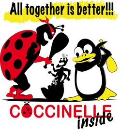
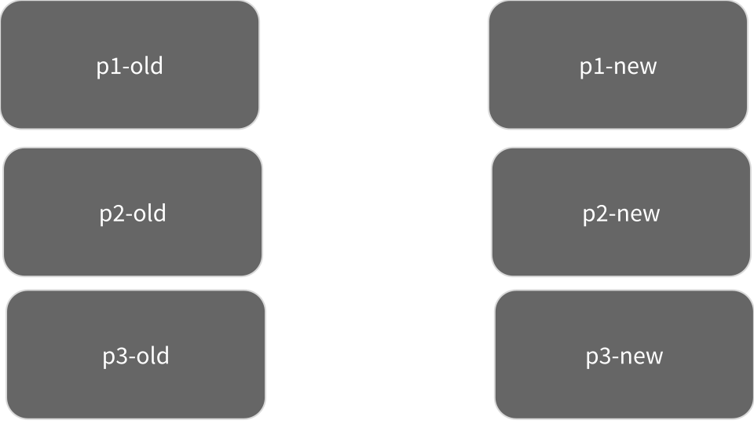

spdiff.js
Fully automated API updates
Warning

Work in progress
The problem
http://stackoverflow.com/search?q=jquery+updated+1.9
Example
From stackoverflow:
I recently updated jQuery from 1.8 to 2.1. I suddenly discovered that the .live() stops working. I get the error TypeError: $(...).live is not a function.
Is there any method I can use in place of .live()?
(source)
When library API is updated, either:
- your code still works (phew)
- somewhere a breaking change was introduced
Did you look at the (jquery) upgrade guide?
???
jQuery upgrade guide
The.live()method has been deprecated since jQuery 1.7 and has been removed in 1.9. We recommend upgrading code to use the.on()method instead. To exactly match$("a.foo").live("click", fn), for example, you can write$(document).on("click", "a.foo", fn).
jQuery < 1.8
$("a.foo").live("click", someFun)
...upgraded
$(document).on("click", "a.foo", someFun)But that just takes care of one location
Updating all locations
- Search/replace from editor (maybe even regexp)
- Editor refactoring support
- Command line tools:
grep, awk, sed ... - Dedicated tools: graspjs, JSRefactor, ...
There has to be a better way!
Coccinelle
(website)
Collateral evolution

Semantic patches (SmPL)
A "WYSIWYG" patch language.
???
Abstract this patch
--- /old/path.js
+++ /new/path.js
@@ -1, 1 +1, 1 @@
- $("a.foo").live("click", someFun)
+ $(document).on("click", "a.foo", someFun)
To (SmPL) semantic patch
@@
string X0;
expression X1;
@@
- $(X0).live("click", X1)
+ $(document).on("click", X0, X1)
@@
string X0;
expression X1;
@@
- $(X0).live("click", X1)
+ $(document).on("click", X0, X1)
- Abstraction of parts of code (metavariables)
- Not sensitive to formatting/spaces (parses code)
- Looks like the code that will change
All good then...?
Issues...
- SmPL only targets C code (it was written to target Linux device drivers)
- SmPL patches can be tricky to get right
spdiff(.js)
What is spdiff?
spdiff is a tool that finds common changes in changed C code and presents the common changes in a compact manner using SmPL
Originates in the Coccinelle project.
spdiff.js
A JavaScript-port of spdiff that targets JavaScript programs
spdiff approach
Express largest common changes using SmPL
> spdiff [[p1-old.js, p1-new.js],
[p2-old.js, p2-new.js],
[p3-old.js, p3-new.js]] = common.smpl
> apply common.smpl p1-old.js = p1-almost-new.js
> apply common.smpl p2-old.js = p2-new.js
> apply common.smpl p3-old.js = p3-nearly-new.js
Blank example
jQuery example
$("a.foo").live("click", someFun)
$(document).on("click", "a.foo", someFun)
$("otherselector").live("click", function() {
console.log("hi");
})
$(document).on("click", "otherselector",
function() {
console.log("hi");
})
AngularJS 1.3 -> 1.4
(No! We are not doing 1.x -> 2.0 today)Due to c8700f04, there is no need to call $scope.$apply or $scope.$digest inside of a animation promise callback anymore since the promise is resolved within a digest automatically. (Not to worry, any extra digests will not be run unless the promise is used.)
$animate.enter(element).then(function() {
$scope.$apply(function() {
$scope.explode = true;
});
});
$animate.enter(element).then(function() {
$scope.explode = true;
});
$animate.enter(element).then(function() {
$scope.$apply(function() {
$scope.someprop = 42;
});
});
$animate.enter(element).then(function() {
$scope.someprop = 42;
});To library maintainers:
Along with usual update guides, provide a SmPL patch that describes the update of usages.
- It's more descriptive of impact on library-using code
- It's directly applicable to users (*)
To library users
Share your SmPL patches for API usage updates.
The future
TODOs
- make it as fast as spdiff
- proper cmd-line tool
- extend parser...
- improve pretty-printing
- support JS embedded in HTML
- documentation
- more powerful SmPL constructs
- In particular the "..."-operator
- integrate in Github PR viewer
- extend to more than JS?